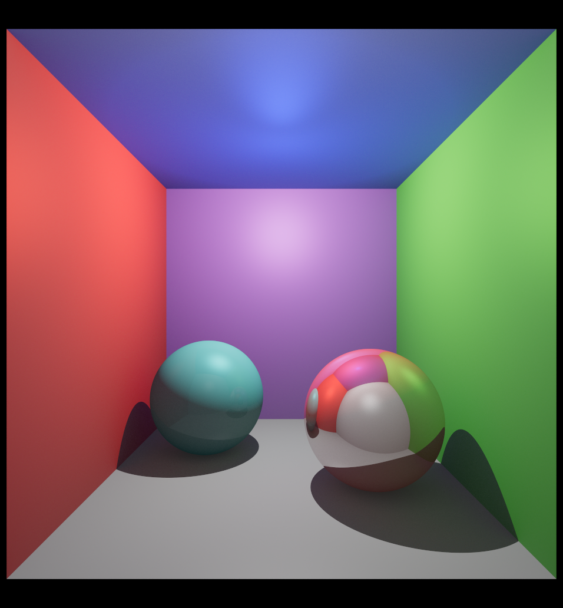
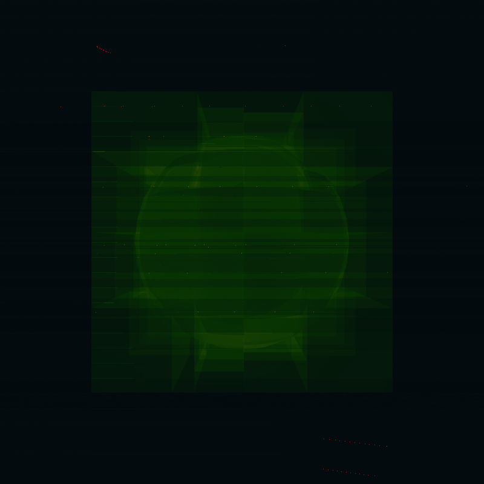

A performance heatmap of the render of a mesh sphere inside a kdtree acceleration structure (it's quite interesting how the kdtree structure is very visible on the heatmap).
I made this phong multi-threaded software raytracer for a CG course in uni. It implements uv texture mapping, reflexions, refractions, tone mapping, and rendering meshes using acceleration structures.


A performance heatmap of the render of a mesh sphere inside a kdtree acceleration structure (it's quite interesting how the kdtree structure is very visible on the heatmap).